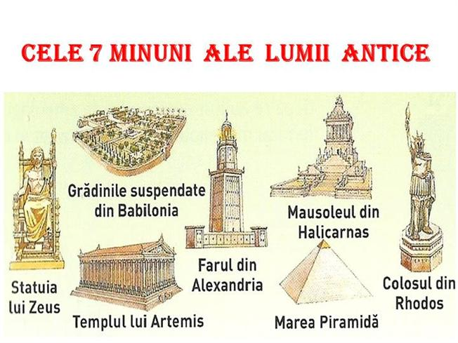
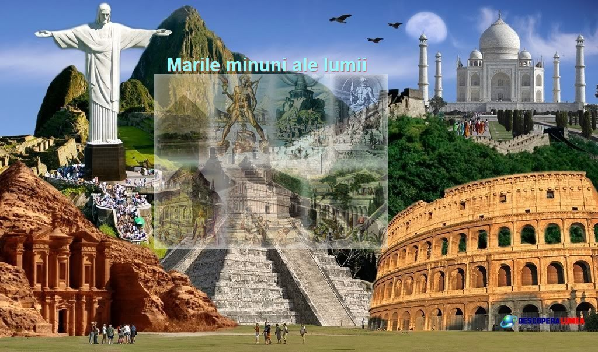

CLASIFICARE:
Cele 7 minuni ale lumii sunt o clasificare a celor mai impresionante și semnificative construcții ale lumii
în diferite perioade istorice. Există două liste de 7 minuni ale lumii: cele antice și cele moderne. Clasificarea
acestor construcții este importantă pentru a descoperi
istoria și cultura fiecărei construcții și pentru a înțelege evoluția arhitecturii și a tehnologiilor de construcție de-a lungul timpului.


Cele 7 minuni ale lumii antice sunt următoarele:
- Marele Templu al zeiței Artemis din Efes -Efes, Turcia
- Grădinile suspendate ale Semiramidei -Babilon, Irak
- Statuia lui Zeus la Olympia -Olympia, Grecia
- Templul lui Artemis din Corfu -Corfu, Grecia
- Farul din Alexandria - Alexandria, Egipt
- Mausoleul din Halicarnas -Bodrum, Turcia
- Piramida lui Keops
Cele 7 minuni ale lumii moderne sunt următoarele:
- Marele zid al Chinei - China
- Petra - Iordania
- Statuia lui Hristos Mântuitorul - Rio de Janeiro, Brazilia
- Machu Picchu - Peru
- Colosseumul - Roma, Italia
- Taj Mahal - Agra, India
- Chichen Itza - Peninsula Yucatan, Mexic